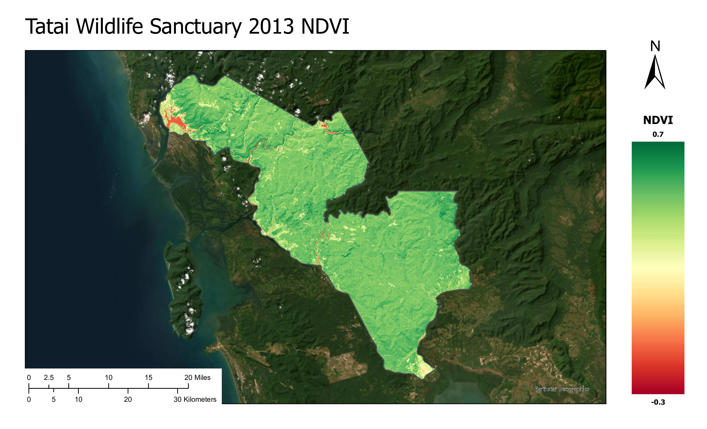
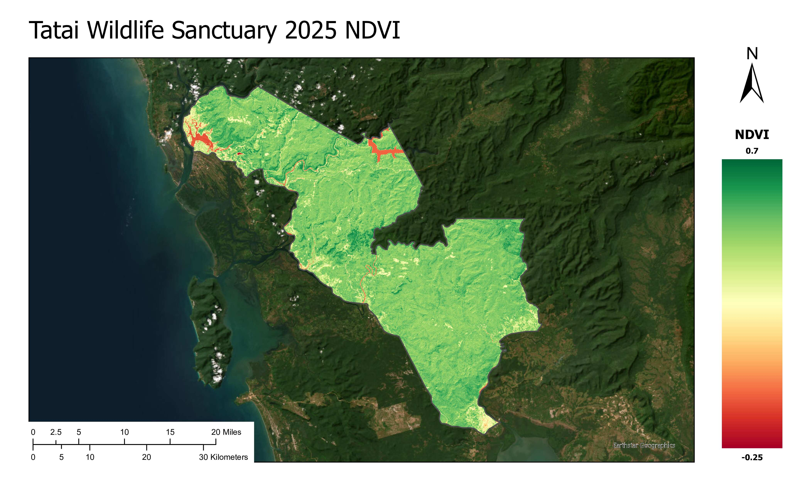
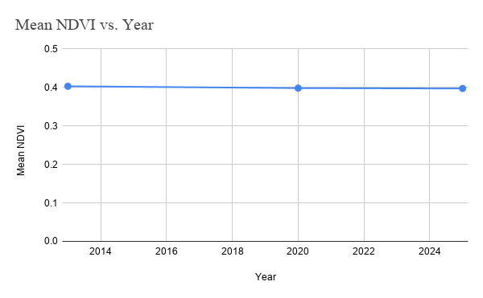
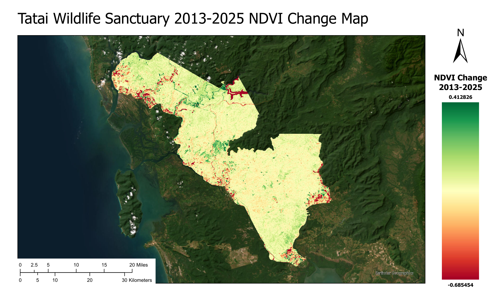
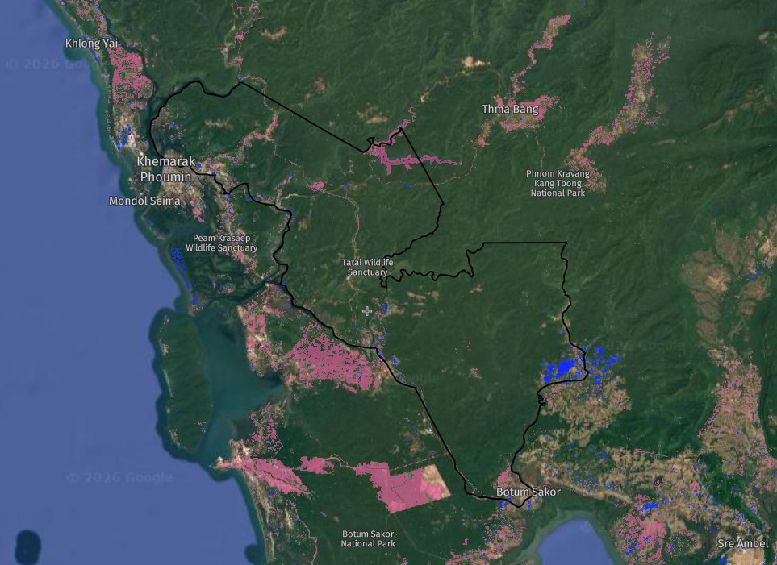

Vegetation monitoring & landscape change · Cambodia · 2013–2025
A multi-temporal NDVI assessment of protected-area designation effects using Landsat 8/9, fire alerts, and infrastructure stressors in the Cardamom Mountains.
How has the establishment of the Tatai Wildlife Sanctuary influenced vegetation health and landscape change since its implementation in 2016?
Cambodia has expanded protected areas significantly since the 1990s as part of broader biodiversity conservation efforts. Despite legal protection, many conservation areas continue to face pressure from logging, land concessions, infrastructure projects, and fires — a tension between formal protection and ongoing development that frames any analysis of Tatai Wildlife Sanctuary.
The sanctuary lies in the Cardamom Rainforest, a biodiverse wilderness and an area of interest for Cambodia's goal to reintroduce tigers. It was designated a protected area in May 2016 (144,247 ha) and amended to 144,539 ha in July 2023. The site has faced poaching, logging, fires, and land grabbing; satellite records also document deforestation across Cambodia's protected areas as recently as 2022.
Management initiatives include ecotourism planning with a sustainability focus. Portions of the landscape participate in the Southern Cardamom REDD+ Project, aimed at reducing emissions, halting deforestation, and combating forest degradation.
Cambodia applies four zone types within Tatai:
Mean NDVI decreased slightly from 0.403 (2013) to 0.397 (2025). The small magnitude suggests overall vegetation greenness remained stable after the 2016 conservation designation. Spatial difference analysis shows most areas experienced minimal change or slight increases; the largest negative changes occur in water bodies, which naturally register low NDVI. Reports of illegal logging and wildlife activity may explain concentrated negative changes away from water.
Overall vegetation conditions appear largely stable across the study area.




The strongest vegetation loss aligns with the Stung Tatai hydropower reservoir and localized fire-affected areas on the 2013–2025 change map. Most of the sanctuary retained stable conditions or slight growth, indicating large-scale ecological resilience despite site-specific disturbances.
NASA FIRMS data (2015–2025) yielded 285 fire alerts from Aqua and Terra MODIS — not all confirmed as active fires. Global Forest Watch analysis shows 150 ha of forest loss from fire between 2016 and 2024, compared with 41 ha between 2005 and 2015. Total tree cover loss across both periods was 3.2 kha; fires accounted for a fraction of total loss but appear to have had the strongest effect on vegetation health.
Although not every alert represents confirmed fire damage, several alert clusters align with areas of lower vegetation vigor on the NDVI map. After 2015, alert counts dropped — potentially reflecting protected-area status — yet recent fires may have had greater per-event impact. One hypothesis: increasingly extreme wet/dry seasons under climate change may make forests more fire-prone even as alert frequency declines.
